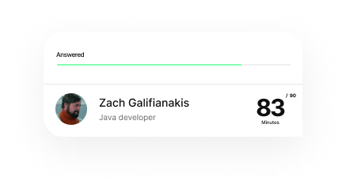

Create high-quality
assessments, fast
Tests for many disciplines:

All in one central tool
No more needed email automation, spreadsheets, csv imports/exports, calendar reminders, etc Keep up with candidate and make faster decisions to offer the best candidate experience. Anywhere you are.
Powerful template builder
Make custom online tests and find the perfect candidate for you for any position role.
Automated evaluation
Put more success into your business by automating your workflows
Possibility to integrate
with other tools and needs
with other tools and needs
Speed up your hiring process by never having to switch between tools again
Asses of technical and cultural fit
Helping employees be smarter by creating cutting-edge online tests
Rich reporting & analytics
We provide complete control over
your assessments
Assessment unified process
The hiring process doesn't have to be so inflexible and time-consuming